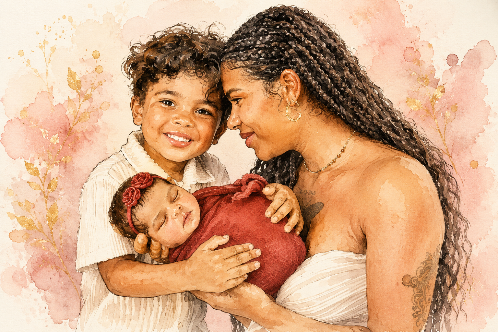

Meu amor,
Existem palavras que surgem com facilidade, e outras que precisam de toda a ternura do coração para serem ditas. Hoje, neste dia tão especial, é com essa ternura que me sento, com nossos filhos do lado, para te dizer o quanto você é extraordinária.
Ser mãe não é apenas cuidar. É estar presente quando o mundo pesa, é sorrir mesmo quando o cansaço fala mais alto, é criar um lar onde o amor é sentido em cada detalhe. E você faz tudo isso com uma graça que nos encanta todos os dias.

Ver você com o Tito, respondendo cada pergunta curiosa e estranha dele com paciência e um sorriso no rosto, como se não houvesse nada mais importante no mundo naquele momento, e agora com a Luna, tão pequenininha e já tão amada, meu coração transborda de gratidão por ter você como companheira desta vida e como a mãe dos nossos filhos.
Obrigado por tudo que você faz pela gente todos os dias, mesmo quando ninguém está vendo. Você merece todo o amor que existe.